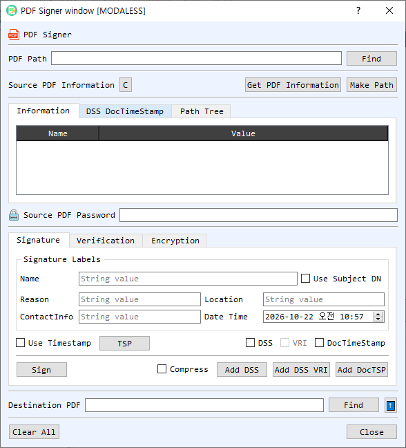

PDF Signer Dialog Guide
The PDF Signer signs and verifies PDF documents, adds document security and timestamp information, builds certificate paths, and encrypts or decrypts PDF files.

Figure 1. PDF Signer with the Information tab and Signature controls visible. Use the Verification and Encryption tabs for their respective operations.
Screen Areas
- PDF Path / Find — Select the source PDF. Get PDF Information reads document metadata and signature information; C clears the displayed source information.
- Source PDF Information tabs — Information lists PDF properties; DSS DocTimeStamp shows document security store and document timestamp details; Path Tree displays certificate-path information. Make Path builds a path for the signing/verification certificate.
- Source PDF Password — Enter the password when the source PDF is encrypted.
- Signature tab — Set signature labels: Name, Reason, Location, ContactInfo, and Date Time. Enable Use Subject DN to use the certificate subject as the signer name.
- Timestamp and DSS options — Enable Use Timestamp and configure TSP to request a signature timestamp. DSS adds validation data; VRI adds per-signature validation-related information when DSS is enabled. DocTimeStamp adds a document timestamp.
- Sign / Compress / DSS buttons — Sign creates the PDF signature. Compress controls compression where supported. Add DSS, Add DSS VRI, and Add DocTSP add validation or timestamp data to a PDF.
- Verification tab — Configure certificate verification using the certificate, Trust List, CA List, and optional At Time setting. Use Verify Chain and the DSS, VRI, or document-timestamp verification controls to inspect the relevant PDF validation data.
- Encryption tab — Use Encrypt or Decrypt for PDF encryption operations. Provide the required passwords and destination as prompted.
- Destination PDF / Find / up-arrow — Choose the output PDF path. Find browses for a destination; the up-arrow copies the source path into the destination field.
- Clear All / Close — Clear the dialog's paths and information or close it.
Sign a PDF
- Select a source PDF with Find and enter its password if it is encrypted.
- Select the signing certificate and private key through CertMan when prompted.
- Set the signature labels and date/time. Enable Use Subject DN if the signer name should come from the certificate.
- Optionally enable Use Timestamp and configure the TSP. Select DSS, VRI, or DocTimeStamp if the PDF should include validation or timestamp data.
- Choose a destination PDF path and select Sign. If the destination already exists, confirm whether to replace it.
Verify a PDF Signature
- Select the signed PDF and enter its password if required.
- Review its signature information with Get PDF Information and inspect signer/CMS data as needed.
- On the Verification tab, set the certificate and trust options. Use At Time to check against a specific time.
- Select Verify for the signature, Verify Chain for certificate-chain validation, and the DSS/VRI or DocTSP verification commands when you need to verify embedded validation/timestamp data.
- Review the verification results and certificate path information.
Add DSS or Document Timestamp Data
- Select the source PDF and build the certificate path if needed.
- Use Add DSS to add validation material, Add DSS VRI to add VRI-related material, or Add DocTSP to add a document timestamp.
- Specify the output PDF destination and inspect the updated information on the DSS DocTimeStamp tab.
Encrypt or Decrypt a PDF
- Select the source PDF and provide its password if it is already encrypted.
- Open the Encryption tab and choose Encrypt or Decrypt.
- Provide the required credentials and destination path, then run the selected operation.
Notes
- PDF signing changes the document and creates a signed output file. Keep the original if you need an unchanged copy.
- A valid signature does not by itself guarantee that the signer certificate chains to a trusted authority; review signature and chain verification separately.
- Timestamping depends on the configured TSP service. DSS and VRI features depend on the validation information available for the signing certificate.
- Protect PDF passwords and signing private keys. Verification results depend on the chosen trust sources and verification time.